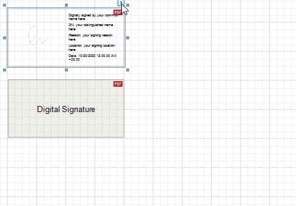

PDF Signature
PDF Signature is a control that adds a visual signature to a report exported to PDF.
You can sign a report document when you export it to PDF. The signature information you specify is saved to the document's PDF Signature Options. The PDF Signature control visualizes the document signature information:
- Certificate name
- Distinguished name
- Location
- Signature date
- Signature reason

Tip
For more information on how to create, export, and sign a report, refer to the following tutorial: Reports with a Visual PDF Signature.
Add a Signature Control to a Report
Drop the PDF Signature control from the Toolbox onto a report.

Report with Multiple Signatures
The first PDF Signature control is added to a report with the Display Document Signature property enabled. This control visualizes the document signature information.
Other PDF Signature controls are added with the Display Document Signature property disabled. When a report is exported to PDF, these controls are converted to signature form fields. Users can open an exported file in a PDF editor and put their signatures in these fields.

Enable a control's Display Document Signature property to make it visualize the document's signature information. This property becomes disabled for all other signature controls.
If all signature controls have the Display Document Signature property disabled, the signature information is added to an exported file but is not displayed.
Specify Signature Options
Expand the control's smart tag and enable check boxes for the signature fields that you want to display.
Image Display Mode
Specifies whether the control shows the signature image. The following property values are available:
Show
The control shows a sample signature image. If an exported document is signed, the converted PDF form field shows the actual signature image.
Hide
The control does not show a signature image.

Show Certificate Name As Image
The control shows a sample certificate name in place of a signature image. When an exported document is signed, the converted PDF form field shows the actual certificate name.

Display Document Signature
Specifies whether the control displays the document signature information. For more information, refer to the following section: Report with Multiple Signatures.
The signature control shows the certificate name, distinguished name, location, signature date, and signature reason. Disable the corresponding options in the control's smart tag to hide these fields.

Disable the Show Captions property to exclude captions from the fields listed above.
| Show Captions Enabled | Show Captions Disabled |
|---|---|
 |
Limitations
The PDF Signature control is not exported to non-PDF formats. A placeholder is added to exported documents instead.